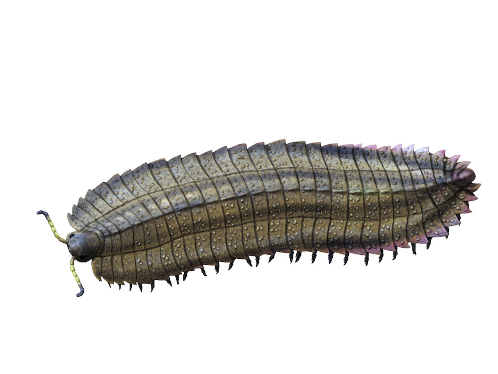
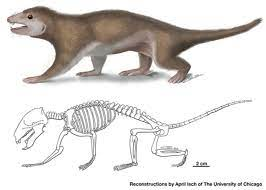

At first glance, insects may seem inconspicuous or even insignificant. Yet, when we examine the annals of evolutionary history, they emerge as the true champions, having achieved unparalleled levels of diversity. Having made their debut over 385 million years ago, insects embarked on a journey of adaptation and proliferation. Their evolutionary journey is one of remarkable tenacity and resilience. Today, they boast of over a million identified species, a testament to their adaptability. From the dense rainforests to arid deserts, insects have made every corner of the earth their home. Their sheer variety in terms of shape, size, and function is neverending. They range from the delicate fluttering butterflies to the industrious ants that form complex colonies.

Several evolutionary innovations fueled their success. Their exoskeletons, for instance, not only provide protection but also allow for varied forms and structures. Their remarkable reproductive capabilities, combined with their ability to colonize virtually any habitat, set them apart. This adaptability is evident in their diverse diets, from plant sap to other insects, and even blood in the case of mosquitoes.
Moreover, certain species evolved intricate social structures, leading to cooperative behaviors that furthered their dominance. Be it the hierarchies in bee colonies or the division of labor in ant societies, these structures are a testament to their evolutionary prowess.
But their role isn't just about numbers or survival tactics. Insects are the linchpins of ecosystems, driving processes like pollination, which is crucial for many plants, and decomposition, ensuring the recycling of nutrients back into the earth. They act as both pollinators and prey, playing a pivotal role in food chains across ecosystems.
Through their myriad interactions with plants, animals, and the environment, they weave the fabric of life, emphasizing that even the smallest creatures can cast the longest shadows. Their ecological significance cannot be overstated, as they impact every facet of the natural world. Their stories are a vivid reminder of nature's interconnectedness and the delicate balance that sustains life on Earth.
Mammals: The Rise of Our Ancestors
Abood Abulubdeh
The captivating saga of mammals is deeply rooted in Earth's rich tapestry of history and environmental changes. These warm-blooded creatures, recognized by their distinct traits like endothermy and the presence of fur, have not only survived but thrived in nearly every habitat on our planet. Their tale begins with the therapsids, a primordial group that roamed the Earth approximately 225 million years ago. These creatures laid the foundation for what would become one of the most diverse and widespread classes of animals.
As the Earth transitioned through various climatic and geological epochs, mammals continued their evolutionary journey. Features such as the three distinct middle ear bones differentiated them from their reptilian forebears. Moreover, the evolution of mammary glands became a game-changer. These glands allowed them to provide nourishment directly to their young, giving them an edge in survival and ensuring better care for their offspring.

The course of evolution presented a myriad of mammals. First came the egg-laying monotremes, peculiar creatures like the platypus that offer a glimpse into early mammalian life. Following them were the marsupials, best exemplified by kangaroos, with their unique reproductive system involving a pouch. Dominating today's world, however, are the placental mammals – from the majestic elephants roaming the African savannahs to the bats fluttering in twilight skies.
Mammals are a testament to adaptability. Their insulating fur or blubber allows them to endure in the chilliest of polar regions, while other species have evolved to withstand the relentless heat of the harshest deserts. Some have taken to the skies, while others have delved deep into the oceans. Their intricate social structures, varied diets, and advanced cognitive abilities highlight nature's boundless creativity. In essence, the story of mammals showcases nature's incredible capacity for innovation, resilience, and survival in an ever-changing world.